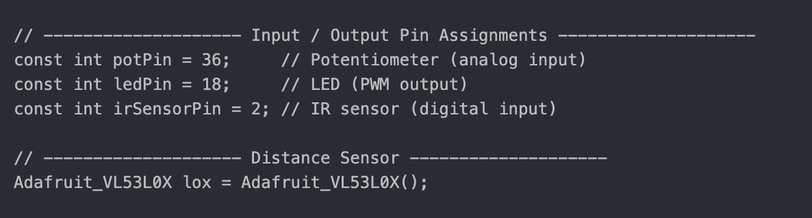

|
|
This snippet of code includes the enabling of custom configuration for Dabble, Dabble's
Terminal and Dabble's Gamepad on the app. This, along with the ESP32 library for Dabble,
allow us to be able to connect to the Dabble app via bluetooth and control the robot's
movement. Additionally, the last line is for the VL53L0X distance sensor library which
will allow us to measure range later on.
|
|
|
This section of code is the pin setup for both motors, right and left. Both
motors start off with the enable pin which is connected to pin 27 on the ESP32.
The wire for the enable pin will be connected to the EEP on the 8833 motor
driver. The enable pin allows for control of motor speed. Then there are the
motor pins 1 and 2 for each motor which are each respectively connected to IN1,
IN2, IN3, and IN4 of the motor driver. These pin's control the direction of the
motor (forwards/backwards).
|
|
|
Here we are defining some more constants. MAX_SPEED is a variable that is used to
store the maximum motor speed, as the name suggests. The freq variable is used to
define the frequency of the PWM signal in Hz, and the resolution is 8-bits, meaning
values will range from 0-255. Each motor and the LED uses a unique PWM channel.
|
|

|
This snipped is about the potentiometer, LED, and IR sensor pin assignments.
For the potPin, it is analog values from the potentiometer ranging from 0-4095.
The ledPin is controlled using PWM, so that the potentiometer can adjust the
brightness. The IR sensor is connected to a pin that allows for digital input,
allowing the snsor to detect darkness or light. The last line creates an
instance of the VL53L0X distance sensor and the object (lox) allows for the
retrieval of these distance measurements.
|

|
This block of code is the setup() function which allows for the necessary
intialization and setup. First we start off with the initialization of the
serial monitor, I2C (for the VL54LOX), and starting the connection to the
Dabble app using the name "MyHelperBot". Additionally, in the setup()
function we set up all the motor control pins as outputs, we configure
PWM functionality for motor and LED control, and configure sensor pins. Then
Initializes the VL53L0X sensor and halts the system if initialization fails.
|

|
This section of code is the beginning of the loop() function. Here we
initalize the motor speeds as zero (to prevent them from running without
being prompted), initalize the irSensorValue variable to hold the digital
values from the irSensorPin (to determine if it's light out or dark),
and reading controller input using Dabble. We start off with the first
if statement which is uses the IR sensor value to determine if it is
light out (irSensorValue==HIGH) or if it is dark out (irSensorValue==LOW).
If it is dark out, then based of the potValue (the potentiometer dial),
the LED lights up. The potentiometer allows the brightness of the LED to be
adjustable. If it is light out, the LED is switch off.
|

|
This code segment uses the VL53L0X distance sensor to detect nearby obstacles.
It takes a distance reading and checks if the measurement is valid. If an object
is detected within 40 mm, the robot briefly reverses at full speed for 0.5 seconds
and then stops to avoid a collision. The return ensures the rest of the loop is
skipped during this avoidance maneuver.
|
|
|
In this section, we use if statements to check which direction button is pressed on
the Dabble Gamepad. Then we adjust motor speeds accordingly to move forward, backward,
or turn. These adjusted speeds are then sent to moveMotor() function. If none of the
buttons are pressed the speed defaults to the initalized speed of 0, meaning the motors
should not move.
|

|
The `moveMotor` function sets the direction and speed of both motors based on the input
values. It uses digital pins to control the motor direction—forward, backward, or stop—and
applies PWM signals to the enable pins to adjust speed. The function ensures smooth and
accurate movement by handling each motor independently.
|